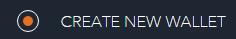
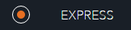
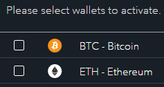
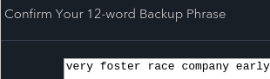
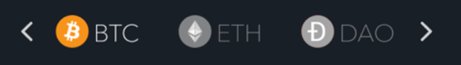
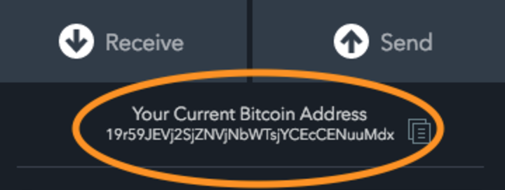
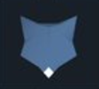
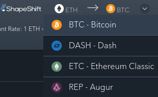
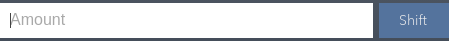

Quri Manuals
Step 1: Setup Your Wallet
We provide Jaxx as a third party safe wallet option for you to store your Bitcoin and other digital currency. If you plan on buying and selling your Bitcoin quickly, just hold the Bitcoin in your exchange wallet. You can send and receive Bitcoin from this wallet. Copay, a wallet that only stores Bitcoin, is available as a backup.
Your Jaxx digital currency wallet
Jaxx provides a wallet for multiple digital currencies. Think of each as a different wallet in a central location.
Wallet Setup
Open your Jaxx wallet by finding Jx in your menu or by searching “Jaxx” in your search bar.
Select "Create new wallet" option
Select "Express" option
You are then asked what coins you would like to set up wallets for. Feel free to chose all of them or just a few. You can always activate additional wallets later.
-
Back up your wallet.
The 12 random words are your wallet’s back up phrase. You can use the phrase to restore your wallet if you lose your computer or Quri Platform. Write down the exact phrase as it is written on your wallet and keep it in a secure offline location. Do not share the phrase with anyone unless you would like them to have access to your funds. If you do not write down this phrase and lose access to Quri, you will lose access to your funds.
Set a security PIN on the next screen to more fully secure your wallet.
Your Jaxx Wallet
Your Jaxx wallet is now ready to use. You can switch from your Bitcoin wallet to one of your alt-coin wallets by clicking the symbol and name of the currency at the top of your wallet page.
Receiving Bitcoin
To receive digital currency in your wallet, simply click the copy button next to your “Bitcoin Address”. This will copy your receiving address to your clipboard. Paste that receiving address into your exchange under “Send”. It will take around 10 minutes for you to receive your funds.
Sending Bitcoin
To send funds out of Jaxx, just click “Send” and input the address you want to send the funds to.
If you want to sell your Bitcoin for dollars or euros, you will need to send your Bitcoin back to the exchange. If you want to sell your alt-coins for dollars or euros, first trade them for Bitcoin on Jaxx, then send them to your exchange.
Buy and Sell Alt-Coins on Jaxx
By clicking the blue fox logo you can exchange Bitcoin for alt-coins, and alt-coins for other alt-coins.
Choose the currency you want to exchange by clicking on the wallet for that currency.
You can exchange that currency for another simply by clicking the drop down button
Input the amount you want to exchange and select “Shift”
